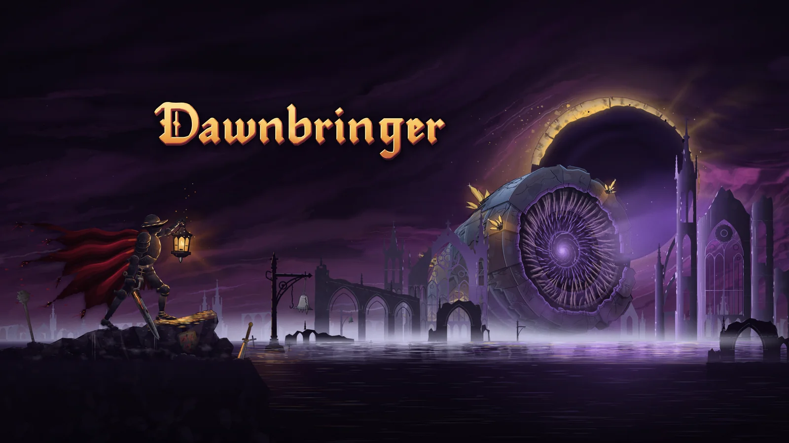

Rule 01
Deterministic cores
Integer clocks and seeded generators give the same output for the same input.
23°33'S 46°38'W // Est. 2025 // praisetc.com
Independent software and game studio in São Paulo. We ship a deterministic roguelike and a structural engineering web app.
Game // Godot 4.5 // GDScript

R4 CONCEPT ARTA dark-fantasy roguelike auto-battler whose integer-only battle engine replays every fight the same way on every device.
Dawnbringer stack // 7 languages
01 // GDScript // 1,068 files1,051 files in game/ and 17 in tools/, including 517 GUT test files, plus 81 .tscn scenes.
Engineering // TypeScript // GPL-3.0-or-later
Interactive parametric preview. Launch the live app for full NBR 6118:2023 & NB-1/78 calculations.
Live app // loads on click
Nothing loads from the app until you press a button.
A free, offline-first web app that designs reinforced-concrete buildings in the browser under NBR 6118:2023 and NB-1/78.
Engineering notice. A licensed structural engineer must review every result before use.
src/calculo/, pure TypeScript, no ReactOpenStrut V2 stack // 8 languages and formats
01 // TypeScript // 412 files352 in src/: both design codes, domain geometry, the IFC4 and DXF writers and the SISTRUT 1991 parser.
Studio // verification // visual system

Rule 01
Integer clocks and seeded generators give the same output for the same input.
Rule 02
Expected values come from sources the code did not produce.
Rule 03
Every file format has a byte budget.
Rule 04
Sprites and brand files rebuild from generator scripts.
Studio tooling // 6 tools
01 // HTML · CSS // Zero-dep UIHand-written pages, one stylesheet and one deferred script. No framework, no bundler, no webfont.
Contact // profiles
Company // registration